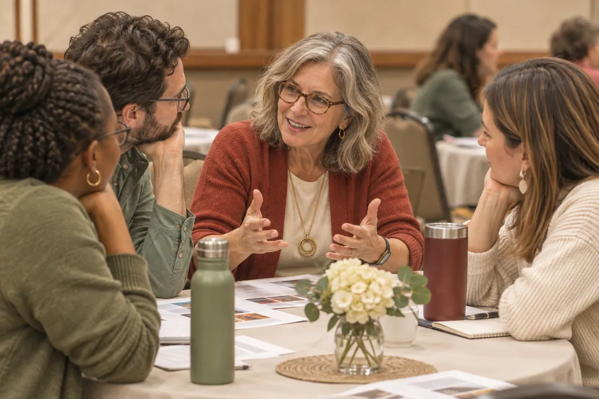

Districts and high schools
Program licensing
Site licenses for the Pathways to Success curriculum, including framework, letter of study, guided projects, templates, and rubrics, with optional updates as state requirements change.
Excelsior: ever upward
Excelsior Educate helps schools build alternative pathways to graduation that engage, include, and graduate every student, with learning that leads to a real next step.
Why this matters
Long before COVID, students were disengaging. Many didn't see how school connected to their future, so they chose online programs, entered the workforce without a diploma or a plan, or left school entirely.
Being present isn't the same as being engaged. When content coverage outweighs relevance and application, learning loses its impact. Careers ask for knowledge that is integrated, applied, communicated, adapted, and supported by technology. Our work builds that bridge.
Access opens the door. Outcomes show students are ready.
Absenteeism figures as cited in Gretchen Haptonstall's "Beyond Credits" presentation (U.S. Dept. of Education, Attendance Works, Brookings).
The Applied Middle
Between "I took the class" and "I'm ready for what's next" sits the Applied Middle, where students use what they've learned, explain it, and connect it to their own future.
Know · Understand
Completed coursework, traditional or online classes, and prior proficiencies count. Students build on what they've already earned instead of starting over.
Use · Solve · Build
Individualized guided projects, technical writing, service learning, and work-based learning put knowledge to work, aligned to state graduation expectations.
Transfer · Continue
Students show what they can do, who they are, and where they're going, then own a concrete next step into training, work, or further learning.
The Pathways to Success Program
Pathways to Success is a project-based program for students who haven't been successful earning traditional credits and are at risk of not graduating, including students returning after leaving school.
There are no scripted daily lessons. Teachers get core projects, templates, and rubrics they adapt to each learner, so students can draw on past learning and strengths to demonstrate mastery across academic, cultural, personal, future, applied, and community areas of study.
Capability
Nationally recognized assessments of applied math, workplace documents, and graphic literacy. These skills transfer to any industry and can lead to the National Career Readiness Certificate.
Identity
Artifacts, writing, and reflections gathered over time. Students leave with a physical portfolio that shows how far they've come, reviewed by teachers, administrators, and counselors.
Direction
Students practice interviewing, then present to building and community panels about their past, present, and future: learning explained, future researched, next step owned.
Pathways to Success works alongside CTE, concurrent enrollment, career centers, trades training, work-based learning, and flexible schedules. It includes checks and balances for accountability, administrator and counselor roles, and transcript options so students can transfer back to a traditional pathway if needed.
Find the Fit, Build the Bridge
Our practitioner toolbox walks educators through planning with a real student. The route can vary, but expectations for learning, evidence, and readiness stay clear.
How we work with schools
Districts and high schools
Site licenses for the Pathways to Success curriculum, including framework, letter of study, guided projects, templates, and rubrics, with optional updates as state requirements change.
Teachers, administrators, counselors
Training for new and experienced pathway teachers and for the administrators and counselors who review portfolios and sit on presentation panels.
Leadership teams
A structured look at your existing alternative or credit-recovery options: where students get stuck, what evidence counts, and how to strengthen the Applied Middle.
Conferences and in-service days
Interactive sessions that leave participants with tools they can use with a real student the next week.
Our story
Excelsior Educate was founded by Gretchen Haptonstall, a Colorado high school interventionist and alternative-pathway teacher, with Dr. Ken Haptonstall. Gretchen's work grew from a simple belief: a different pathway should never mean lower expectations.
"Different pathway does not equal lower expectations."Gretchen Haptonstall, Founder
Workshops
Gretchen's sessions blend real student stories, table talk, and hands-on planning with practical take-home tools.

Start a conversation
Tell us about your school, your students, and what you're hoping to change. We'll follow up to talk through options.
excelsioreducate@gmail.com
Grand Junction, Colorado